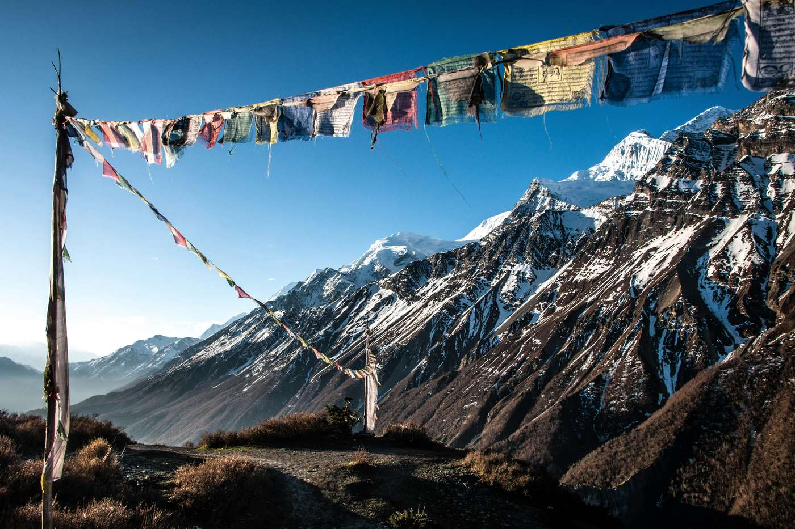
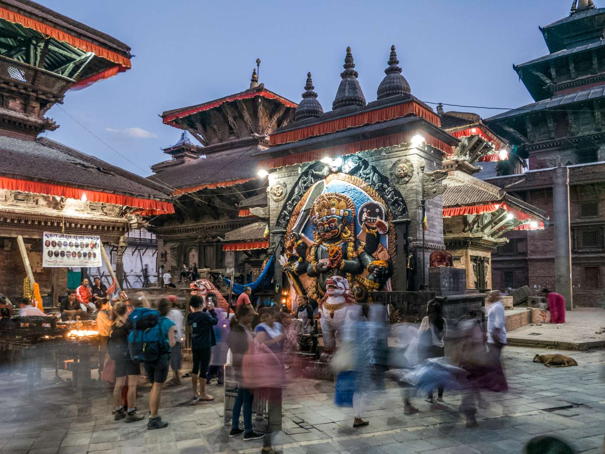
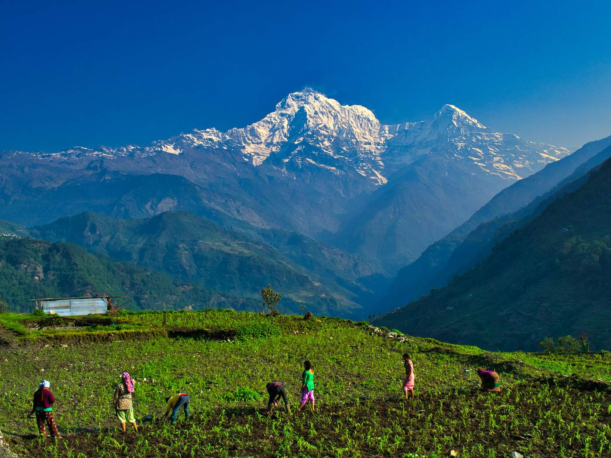

Citizen
Report what you see. Follow it until it is fixed.
Sign in →A broken culvert, a collapsed retaining wall, a water main running for a week. Each one is obvious to the people who pass it and invisible to the office that could fix it.
Potholes, washouts and collapsed shoulders on routes people use daily.
Leaking mains, dry taps and contaminated sources.
Uncollected waste, illegal dumping and overflowing sites.
Downed lines, unsafe poles and failed street lighting.
Slope failures, blocked highways and flood damage after monsoon.

Damaged bridges, schools, trails and civic buildings.
Six steps, and a public record at every one of them.
Someone notices a problem and opens the app where they are standing.
A photo, a sentence and a location. That is the whole submission.
AI suggests a category and severity. An authority confirms or overrides it.
The incident is routed to the body whose jurisdiction actually covers it.
Work is scheduled, a contractor is assigned, and evidence is filed.
The reporter and the public follow the same record to completion.
Report what you see. Follow it until it is fixed.
Sign in →
File trail hazards and conditions from the field, where few others go.
Sign in →
Verify reports, assign responsibility, publish advisories.
Sign in →
Receive assigned work, file progress and evidence.
Sign in →Maintain authorities, roles and the integrity of the record.
Sign in →Every report keeps its timestamps: when it was filed, when it was verified, who it was assigned to, and when work closed. Nothing is quietly deleted.